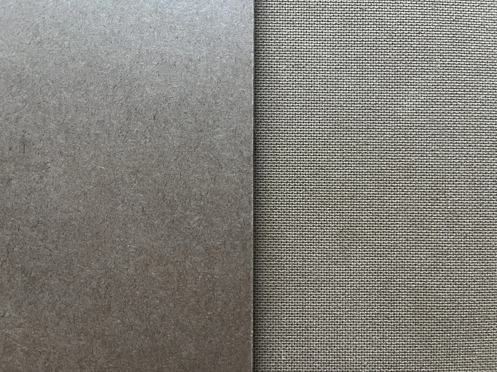
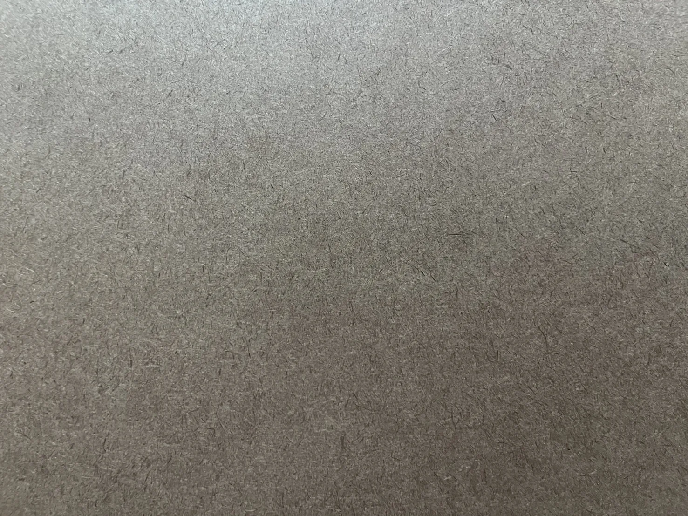
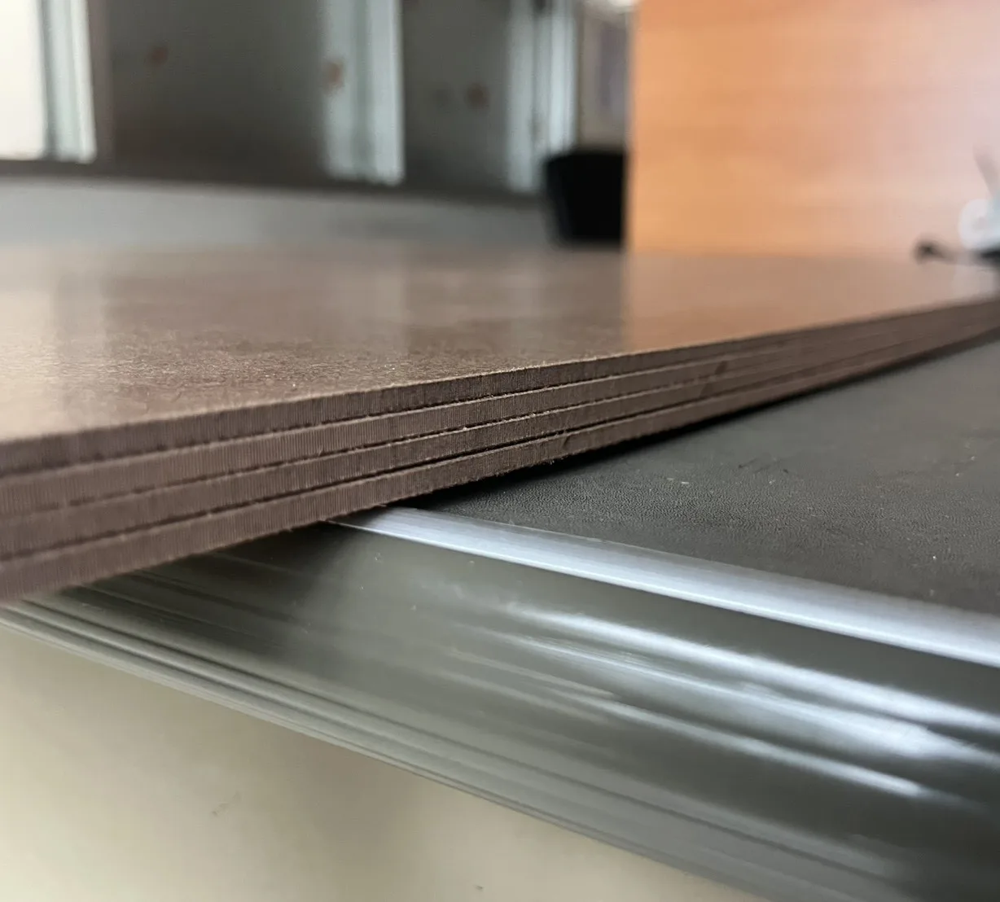
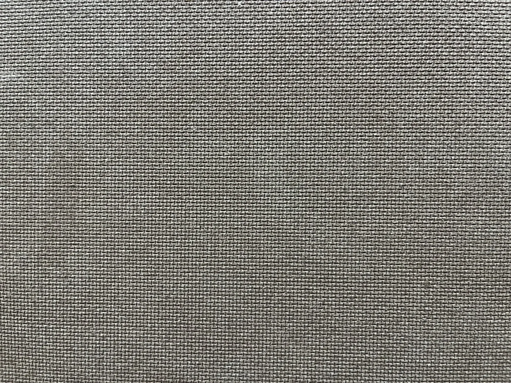
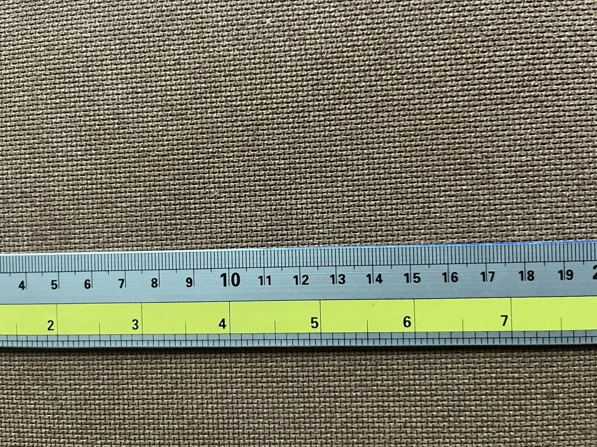

Material platform
Understand the Board Before Selecting the Grade
A technical overview of fibre, surface, manufacturing route and the controls that must be matched to each application.

Board anatomy
See the face, edge and back of the actual board.
Production photographs show the material surfaces and cut edge under consistent lighting.




Visual reference
Surface scale and pattern detail
The measuring scale provides a visual reference for the repeating mesh pattern. Product thickness and tolerance must still be confirmed from the grade-specific technical data sheet.
Open technical resources →Manufacturing story
Inside the wet-process production route.
Factory photography follows the board from eucalyptus feedstock through forming, pressing, finishing, inspection and finished-goods storage.
-
01 / 08
Eucalyptus raw material
WoodEucalyptus raw material The journey begins with plantation-grown eucalyptus sourced in Thailand. This wood provides the fibre for the board.
What moves forwardEucalyptus feedstock
-
02 / 08
Preparation
Prepared woodPreparation The raw material is prepared before it moves into fibre refining. This is the first step in turning the wood into board-making material.
What moves forwardPrepared raw material
-
03 / 08
Fibre refining
FibresFibre refining The prepared wood is refined into fibres. These fibres become the material used in the wet-forming stage.
What moves forwardWood fibres for forming
-
04 / 08
Wet forming
Wet sheetWet forming The fibres are formed into a wet sheet. The material now takes on its board-like shape, ready for heat and pressure.
What moves forwardA formed wet sheet
-
05 / 08
Heat & pressure
HardboardHeat & pressure Heat and pressure consolidate the formed sheet into hardboard. Natural lignin in the wood fibre provides the primary bonding mechanism.
What moves forwardA consolidated hardboard sheet
-
06 / 08
Trimming & finishing
Finished sheetTrimming & finishing The board moves through trimming and finishing. Sheet edges are prepared for the next stage of inspection.
What moves forwardTrimmed and finished sheets
-
07 / 08
Quality inspection
Checked boardQuality inspection The finished board is checked against the applicable product requirements. Inspection connects the production process with the specified grade and order.
What moves forwardInspected boards
-
08 / 08
Finished goods
Stacked boardsFinished goods Finished boards move into storage. The production journey ends with hardboard ready for the next stage of supply.
What moves forwardFinished goods in storage
Material & supply facts
Information for product selection and enquiry.
These facts describe AAF's general hardboard platform. Order-specific requirements are confirmed in the quotation and controlled product documents.
| Topic | Published information | Technical basis |
|---|---|---|
| Surface | One smooth face / one mesh-pattern back | Standard board construction |
| Fibre source | 100% plantation-grown eucalyptus sourced in Thailand | Manufacturing declaration |
| Forming route | Wet-process hardboard | Manufacturing declaration |
| Bonding mechanism | Natural lignin in the wood fibre provides the primary bonding mechanism | Manufacturing declaration |
| General supply range | 1.6–6.0 mm · standard sheet 1220 × 2440 mm | Subject to order confirmation |
| Supply form | Raw sheets, rectangular cut-to-size, profile-cut components and selected 25 × 2050 mm strips | Confirmed at quotation |
Select by application